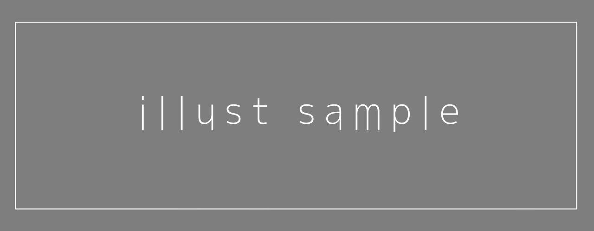

今日も普段と変わらない、つまらない日だった。
授業では就活の話ばっかりで・・・まぁ大学３年だから当然かな。
正直就活なんて楽勝だな。なんたって自分にはこの【やり直せるサイト】がある。

このサイト名は『Re:cord』。簡単に言えば、１日ごとにセーブができて、あとからその１日をロードすることができるサイト・・・だ。
説明してても意味わからないけど、自分はこのサイトをかなり前から使っている。暇つぶしにネットを見てたらたまたま見つけた。
よく見つけたよこんなサイト。どんだけ暇だったんだ？
まぁおかげですごく助かっている。１日の終わりにこのサイトに書き込んで、セーブボタンを押せばセーブ完了。
そうだな、どんな時にロードしているかといえば・・・好きなバンドのCD予約し忘れた時とか、課題出し忘れた時とか、行きいたいライブの日が被ってた時とか。一番でかいのはテストで赤点取った時かな。
ずさんな自分が毎日欠かさずセーブするくらいには優秀だ。ただ一つ欠点があるとすれば、１か月すればセーブデータが消えてしまうこと。１か月過ぎればその日には戻れない。まぁでもそんなに困ってないからあまり気にしていない。あってないような欠点だ。
だから、就活だってどうにかなるだろう。受けたい会社はあるけど、失敗してもロードできる。回数重なれば流石に受かるでしょ（笑。
親友とかは必死に頑張ってるみたいで、今日も一生懸命に話聞いてたし・・・かわいそうだな～。大変そう。
頑張れ親友！自分は悠々自適に過ごすわ～。